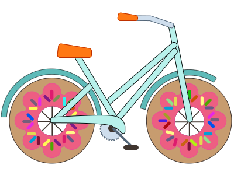

Say hello.
I have too many books on my TBR being ignored because of the numerous blog posts and Medium articles I'm reading on the topic of using email obfuscation, "mailto:", and the easy hack of using my name at my domain.
Here is my truth. I am not fussed. My spam filter is good. Often too good. I'll never make anyone happy, and — let's be honest, okay? — most of our spam comes from Aunt Helen's inability to grasp the BCC field. I need to make only my manager happy. In the case of my own portfolio, guess who the manager is. I'll let those who care to battle the pros and cons of mailto, hacks, reCAPTCHA, Coke vs Pepsi, GIF/ghif vs GIF/jiff, and semicolons in NodeJS.
Me? I'm going to ride my bike and eat some doughnuts!
